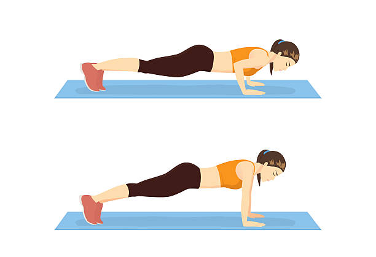
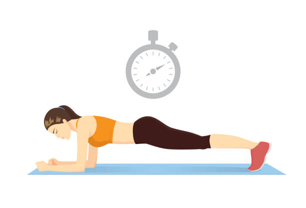

Pushups
- Put your feet close together and place your hands slightly wider than your shoulders. The fingers point forward. => The Body should form a straight line.
- Bend your arms down so far that your chest almost touches the floor.
- Hold briefly.
- Push back in the starting postion and repeat it.
If you are a beginner, you can start on the knees.
Plank
- Place your hands on the floor, directly under your shoulders, and legs straight behind you. Make sure, that they are hip width apart.
- Keep your body straight from head to toe and engage your abs. Don't hike your hips!
- Hold as long as possible. Repeat it!
Make sure that you are holding it each time a little bit longer.
Plank pushup
- Begin in the plank position (description above) with your weigth restin on your forearms. Make sure your body is in a straight line!
- Thight your abs and don't let your hips shift.
- Push up to your hands. Each hand alone.
- Raise down to the starting position.
- Repeat this for around 20 times.
If you are a beginner, you can start on your knees. It will be easier.

Bent-over row
- Stand tall with a core and flat back at the beginning. Hold a pair of weigths at your side. Bend your knees slightly as you push your hips back. Your upper body should almost be parallel with the floor. Keep your chest and head up!
- Hold this position for a short time while squeezing your shoulder blades.
- Row the weigths slowly up. Keep your elbows colse to your sides
- Pause at the top of the movement and squeeze your lats.
- Lower the weights back to the lowest point, slow and controlled. Keep your shoulder blades drawn down and back.
- Repeat this for around 20 times.
Make sure, that your back doesn't round troughout the exercise. Keep it flat.

dumbbell rear-delt fly
- Start with standing with your shoulder width apart. Bend your upper body forward until your back is almost parallel to the floor (see picture). Hold in your hand some weights. Keep ypur chest and head up.
- Bring the weight up and out to your side with slightly bented arms. Make sure to squeeze your shoulder blades together at the top of the rep.
- Bring your arms slowly back down to the starting position.
- Repeat this for around 30 times.
You don't need to use weights, you can also use water bottles.

Tricep dips
- Start sitting on the edge of a stable cair. Make sure, that your fingers are pointed at your feet, your legs extendet and your feet are hip width apart. Your heels should touch the ground.
- To lift your body, press into your palms. Slide forward just far enough that your beind clears the edge of the chair.
- Lower yourselft until your elbows are bent between 45 and 90 degress. You can control the movement throughout the range of motion.
- Push back up until your arms are almost straight.
- Repeat this for around 20 times.
This exercises is one of the most effective for activating the triceps brachii muscle!

Inchworms
- Stand with your feet hip width apart.
- Bend forward from the hips and place your hands on the floor in front of your feet.
- Walk your hands forward, one at a time, until your body begins to form a straight line. Your heels can lift off the floor.
- When you are in an extended plank position, do one pushup and start walking back in to the starting position.
- Repeat this for around 10 times.
If this is to much for yourself, remove the pushups and just do the walking part.
You can challenge yourself, with increasing the numbers of pushups.

Dumbell front raise
- Hold a weigth in each hand.
- Position them in front of your upper legs with your elbows straight or slightly bent.
- Raise ona arm forward and upward until the upper arms are above horizontal.
- Lower down to the starting position.
- Do this for 10 to 15 times on each arm and make 3 sets.
This exercise is perfect for your anterior deltoid muscles!